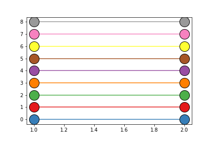

Colors¶
-
class
isopy.tb.Colors[source]¶ Rotate through a set of colours.
The colours pairs, in the inital order, are shades of blue, red, green, orange, purple, brown, yellow, pink, grey.
Is a subclass of
list. Only new methods/attributes, or methods/attributes that differ from the original implementation, are shown below.Examples
>>> colors = isopy.tb.Colors() >>> for i in range(len(colors)): >>> isopy.tb.plot_scatter(plt, 1, i, color=colors.current, markersize=20) >>> colors.next() >>> plt.show()
-
property
current¶ The first item in the list
-
next()¶ Rotate the list to the right and return the new first item.
-
previous()¶ Rotate the list to the left and return the new first item.
-
reset()¶ Reset to the initial condition
-
property